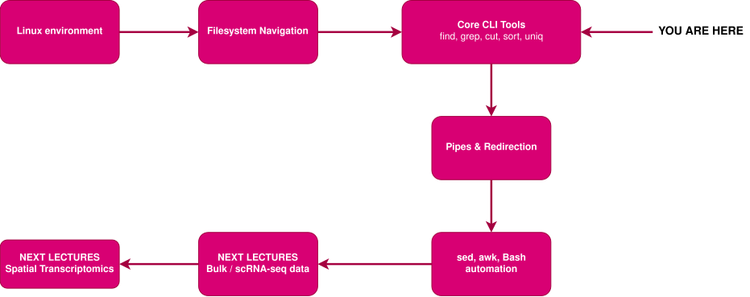
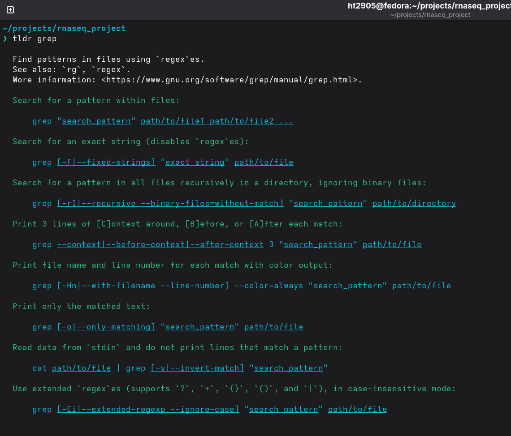
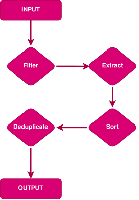
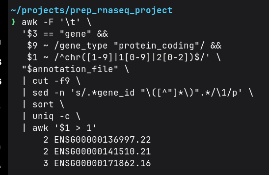
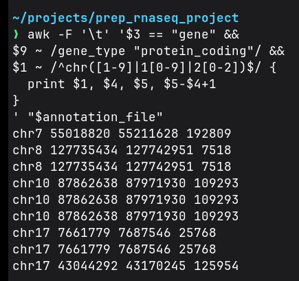

Lecture 04: Command-Line Tools, Text Processing & Automation
From Bulk & scRNA-seq to Spatial Transcriptomics for Fighting Cancer – 2026
2026-09-30
Important Resources for This Session
- Course Github repository: Click here.
- Companion Colab notebook: Click here.
- Linux Command Line Cheatsheet: Click here.
- Regular Expressions Cheatsheet: Click here.
Where We Are in the Course
This lecture combines the original Lecture 04 and Lecture 06 into one longer session.

1. From Bash to Bioinformatics
A Small Annotation Audit
A collaborator has sent us this project:
They ask:
Before we use the annotation, can you give me a quick QC report?
Questions for This Audit
Which annotation file do we have?
Which records are protein-coding genes?
Which of those genes are on the autosomes?
Which gene records are duplicated?
What are the chromosome, coordinates, and genomic span of each gene?
Can we save the results as a clean report?
Note
None of these questions requires opening the file in a GUI.
What Would We Need?
find– locate the annotationgrep– select relevant linesregex – describe chromosome patterns
cut- extract fieldssort- organize valuesuniq- detect / count duplicatessed- transform textawk– apply logic and calculateconnect the steps
→ save the result
The Goal
find– locate the annotationgrep– select relevant linesregex – describe chromosome patterns
cut- extract fieldssort- organize valuesuniq- detect / count duplicatessed- transform textawk– apply logic and calculateconnect the steps
By the end of this lecture, we should be able to turn a messy annotation directory into a reproducible QC report using ordinary command-line tools.
Why Bioinformatics Data Works Well With CLI
The majority of genomic data is represented as plain text.
| File type | Typical structure |
|---|---|
| FASTA | sequences |
| FASTQ | sequences + quality |
| GTF / GFF | genomic annotations |
| BED | genomic intervals |
| TSV | tabular data |
| CSV | comma-separated data |
The presentation often follows:
characters → lines → fields → patterns
2. Anatomy of a Bioinformatics Text File
Example: A GTF Record
One line is one record.
Each record contains multiple fields.
The fields are separated by a delimiter.
Here the main delimiter is a tab:
Four Concepts to Remember
Mini Exercise – Read the Record
Given:
Answer:
- How many tab-separated fields are visible?
- Which field tells us the chromosome?
- Which field tells us the feature type?
- Where would you look for the gene ID?
- What is the delimiter?
3. Five Core CLI Tools
The Five Commands
Today we will build a mental model around five commands:
| Command | Question it answers |
|---|---|
find |
Which file? |
grep |
Which lines? |
cut |
Which fields? |
sort |
In what order? |
uniq |
Which duplicates? |
A useful workflow is:
Introducing a Lifesaver: tldr
Navigating the Linux filesystem was simple enough to memorize. But what happens when you start using more and more tools?
That’s where our lifesaver comes in: tldr!
tldr provides an ultra-condensed, example-focused alternative to man pages.

tldr on grepInstalling tldr and tealdeer
Tool #1: find
Searching the filesystem with find
Before searching inside a file, you need to know which file exists where.
find command anatomy:
Search the current directory:
Find all GTF files:
Find regular files matching a pattern.
Do Not Confuse find and grep!
Before searching inside a file, you need to know which file exists where.
find command anatomy:
findsearches the filesystem, not the contents of files.
This distinction is important because many people, including myself, frequently confuse find and grep when they first start out with Bash.
find — Useful Options
Search recursively from PATH:
Search only regular files:
Search only directories.
Search for name pattern:
Search using case-insensitive name matching:
A realistic bioinformatics search:
Tool #2: grep
Searching File Contents With grep
grep answers:
Which lines contain this pattern?
Example:
Only lines containing TP53 are printed.
Find lines containing the text gene.
Also show line numbers.
grep as a Filter
grep – Useful Options
Show line numbers:
Use case-insensitive matching:
Invert the match:
Extended regular expressions (ERE):
Count matching lines:
Regular Expressions (Regex)
Regex: A Force Multiplier
The real power of CLI data processing tools comes from regular expressions, or regex.
A regex is a way of describing a pattern of text.
Compare:
TP53
with:
^chr[0-9]+$
The first means:
Find exactly the characters TP53.
What does the second string mean?
Regex Vs. Regular Strings
Compare TP53 with ^chr[0-9]+$
The first means:
Find exactly the characters TP53.
The second describes a much larger set of possible strings:
but not:
Basic Regex Building Blocks
. – Match any character
Example:
a.c matches
because . means:
any single character
^ — Beginning of a line
^chr
means:
chr must appear at the beginning of the line.
For example:
match.
But my_chr17 does not.
This is useful for identifying structured lines such as FASTA headers or chromosome names.
$ — End of a line
_old$
means:
_old must appear at the end of the line.
So:
match, but:
does not.
Together, ^ and $ are called anchors.
They describe a position in the line rather than a character.
[] – Character Classes
[ABC]
means:
Match one character that is either
A,B, orC.
For example:
chr[XY]
matches
but chr17.
Using Ranges in Character Classes
[ABC]
means:
Match one character that is either
A,B, orC.
Ranges can also be used: [0-9] means
any single digit from 0 to 9
[A-Z] means
any uppercase letter
Quantifiers — Matching Repeated Characters
Regex can also describe how many times something should appear.
| Operator | Meaning | Example | Matches |
|---|---|---|---|
* |
Zero or more | ab* |
aababbabbb |
+ |
One or more | ab+ |
ababbabbb |
? |
Zero or one | colou?r |
colorcolour |
| — OR
The | operator means:
Match either the pattern on the left or the pattern on the right.
For example:
chrX|chrY
matches:
but not:
It is useful when a pattern can have multiple alternatives.
Combining Regex Components
Now we can build more useful patterns.
For example:
^chr[0-9]+$
means:
| Operator | Description |
|---|---|
^ |
Beginning of line |
chr |
Literal text |
[0-9] |
One digit |
+ |
One or more digits |
$ |
End of line |
Tool #3: cut
Extracting Fields With cut
Suppose a TSV file contains:
To extract the first field:
Output:
Extract field 2:
cut and Delimiters
For tab-separated data:
For comma-separated data:
For colon-separated data:
General form:
For tab-separated files, -f implies tab in common usage.
cut Can Select Multiple Fields
Fields 1 and 3.
Fields 1 through 3.
Field 2 through the end.
The key question is always:
What is the delimiter?
Tool #4: sort
Ordering Text With sort
Order in alphabetical order:
Order in reverse order:
Numeric Sorting With sort
Numerical sorting requires a different mindset:
Without -n, text is compared lexicographically (= as text).
Example:
Alphabetical sort can produce:
Numerical sort:
Sorting by a Field
For TSV-like data:
Breakdown:
Numerical field sorting:
Reverse numerical sorting:
Tool #5: uniq
Removing Adjacent Duplicates With uniq
Given:
Output:
But there is an important catch:
uniq only removes adjacent duplicates.
What if Duplicates Aren’t Adjacent?
Input:
Running:
does not remove all duplicate values.
Instead:
Nothing is adjacent.
uniq Often Needs sort
Input:
Solution? Use sort first:
first groups duplicates, then removes them.
Note
| is called the pipe. More in the next section.
Counting Duplicates
uniq -c counts adjacent identical lines:
Example:
This is already useful bioinformatics information.
For example:
Which gene IDs occur most often in this annotation subset?
4. Combine Commands Into Workflows
The Pipe |
The pipe sends the output of one command to the input of another.
Example:
First:
Then:
Reading a Pipeline Left → Right
Consider:
Read it as:
Keep gene records
↓
Extract chromosome
↓
Sort chromosomes
↓
Remove duplicates
A More Useful Pipeline
Pipeline Debugging
When a long pipeline fails, split it.
Instead of:
test:
Then:
Then:
Then:
Build complicated commands from verified small steps.
Redirecting Output with >
> operator means Write to a file.
Meaning:
Run command
↓
Send stdout to file
Note
If the file exists, > overwrites it.
Appending to a File With >>
Suppose selected_genes.txt already contains:
Run:
Now the file contains:
>> appends (= adds to the end) instead of replacing the existing content.
Note
Unlike >, >> does not overwrite the existing file.
5. Advanced Data Processing Tools
sed – Transforming Text
Why sed?
grep is mainly for selecting lines.
cut is mainly for selecting fields.
Sometimes we need to change text.
- Replace one string
- Remove a suffix
- Transform a line
This is where sed comes in.
Note
sed = stream editor
Simple sed Example
Replace text:
General idea:
| Component | Description |
|---|---|
s |
Substitute |
old |
Text to find |
new |
Replacement text |
g |
Replace all matches on each line |
sed Without g
| Component | Description |
|---|---|
s |
Substitute |
old |
Text to find |
new |
Replacement text |
g |
Replace all matches on each line |
Without g:
only the first occurrence on each line is replaced.
sed reads the input, applies a transformation, and prints the result.
By default, it does not modify the original file.
sed Example: Remove a Chromosome Prefix
So:
becomes:
The command does not remove every occurrence of chr.
It removes only a chr prefix.
sed Example: Remove Unwanted Lines
GTF files often contain comment lines beginning with #:
To remove all comment lines:
The important pieces are:
^#: line starts with #d: delete the matching line
So the command means:
Delete every line that begins with #.
sed and Regex Capture Groups
Regex can also divide a match into groups.
For example:
Suppose we want to transform them into:
With extended regular expressions (sed -E):
The parentheses create a capture group: ([0-9]+)
This means:
Match one or more digits, and remember them.
Inserting Captured Text
With extended regular expressions (sed -E):
The parentheses create a capture group: ([0-9]+)
After capture, the remembered text can then be inserted into the replacement: \1
So:
is interpreted as:
and becomes:
This is one of the most useful regex techniques for reformatting structured biological data.
More sed Examples
Remove a prefix:
Convert:
into:
Remove a suffix:
awk – Fields, Conditions & Calculations
What is awk for?
awk is useful for structured text.
It can:
- Access multiple fields
- Apply conditions
- Perform calculations
- Create new output
Think of it as:
filter + calculate + format
Basic awk
Consider a GTF record:
awk automatically treats the columns as fields:
| Variable | Description |
|---|---|
$0 |
Entire line |
$1 |
First field |
$NF |
Last field |
NF |
Number of fields |
Basic awk (Cont.)
| Variable | Description |
|---|---|
$0 |
Entire line |
$1 |
First field |
$NF |
Last field |
NF |
Number of fields |
Example:
Print field 1 and field 3. Output:
awk + Conditions
Only print gene records:
Interpretation:
This is much more expressive than a simple field extraction.
awk + Calculations
Suppose:
The fields are:
For inclusive genomic coordinates:
With awk:
Output:
Variables: Remembering Values
awk can store values in variables.
For example, suppose we want the total length of all regions:
Here:
adds the length of each record to total.
The END block runs after all input has been processed:
BEGIN
↓
process records
↓
END
Useful Patterns for awk
This gives awk a very useful pattern:
- FOR every record:
- calculate its length
- add it to total
- AFTER all records:
- print total
This is something tools such as cut cannot do by themselves.
Note
There’s also BEGIN, but we will not cover it this session. Feel free to look it up in your spare time.
Formatting the Output
awk can also combine fields into a new format.
Suppose:
We can select specific fields to produce a BED-like representation:
Output:
Regex in awk
Just like grep and sed, awk can use regex.
For example:
The operator:
means:
matches this regular expression
So:
Regex in awk (Cont.)
This could match:
but not:
The same regex concepts used with grep and sed therefore carry over to awk.
awk as a Mini Data-Processing Language
INPUT
↓
read a record
↓
inspect fields
↓
apply a condition
↓
calculate or transform
↓
produce output
Tool Selection Mental Model
Use:
find– locate filesgrep– filter linescut– select fieldssort– order linesuniq– collapse adjacent duplicates
Then:
sed– transform textawk– process structured text with logic
Choose the simplest tool that matches the problem.
5. Environmental Variables
What Is a Variable?
A variable stores a value.
Then:
Output:
Use the variable elsewhere:
Now one value controls multiple commands.
Parameterizing Workflows With Variables
Imagine a workflow using:
Hard-coding every path makes scripts difficult to reuse.
Instead:
Then:
This makes the workflow parameterized (= tham số hóa).
Persistent Variables with ~/.bashrc
~/.bashrc is commonly used for interactive shell configuration.
Example:
After reloading:
The variable will be available in future shell sessions.
Important
Do not treat ~/.bashrc as a random file to paste commands into! Only add configuration you actually understand and want loaded for your shell.
6. From Commands to Scripts
Manual Workflow vs. Script
Suppose every sample requires:
Doing this manually for:
is slow and error-prone.
A script turns the procedure into a reusable program.
A Minimal Bash Script
Create:
Contents:
The first line is the shebang.
It tells the operating system how to interpret the script.
Bash Strict Mode
A common safety-oriented starting point is:
Meaning:
This doesn’t magically make a script safe.
It makes some classes of mistakes easier to detect.
Variables Inside Scripts
Now the filenames are easy to change.
Tip
Enclose your variable names in quotation marks. Quoting protects against whitespace and other shell parsing problems.
Making the Script Executable
Use:
Run it with:
Alternative:
Turn a Repeated Task Into a Parameterized Script
Suppose we have:
A script can take the input filename as an argument.
Run:
What We Have Built

This tiny script is:
- repeatable
- inspectable
- automatable
- easy to rerun
- easier to document
That is the beginning of a reproducible computational workflow.
7. Solution to the Annotation Audit Problem
Back to Our Opening Problem
At the beginning of the lecture, we were given:
Our collaborator asked for a quick QC report.
Let’s solve the problem one question at a time.
Step 1 — Which Annotation File Do We Have?
Start by finding GTF files:
We can now store the path in a variable:
Step 2 — Keep Only Gene Records
A GTF contains many types of records:
Our audit is about gene records.
The feature type is field 3:
Keep the record when field 3 is
gene.
Step 3 — Keep Protein-Coding Genes
GTF stores the gene biotype in the attributes:
We can add this condition:
Now we’re asking:
Is this a gene record? AND Is it protein-coding?
Step 4 — Restrict the Audit to Autosomes
Our audit defines autosomes as chromosomes:
We can describe that using regex:
Then:
Now the filter means:
field 3 = gene AND
gene_type = protein_coding AND
field 1 = chr1–chr22
Notice how the regex is being used as part of the logic.
Step 5 — Find Duplicated Gene IDs
The gene ID is stored inside field 9:
First, keep only the attribute field:
Then extract the gene ID:
Now we have a simple list:
Step 5 — Find Duplicated Gene IDs (Cont.)
Then count identical adjacent values:
For example:
1 ENSG00000198765
2 ENSG00000123456
1 ENSG00000234567The duplicated gene is therefore the ID with a count greater than 1.
We can filter for those:
This gives us:
Which gene IDs occur more than once?
Putting the Duplicate Check Together
The whole pipeline is now:

Step 6 — Extract Coordinates and Calculate Genomic Span
Now we need:
- chromosome
- start
- end
- span
For a GTF record:
For inclusive GTF coordinates:
Calculating Genomic Span (Cont.)
So:

The last column is calculated rather than extracted.
That is where awk becomes especially useful:
read fields → apply logic → calculate → print
Nice. Where would we go from here?
With these tools, you can perform further analysis by yourself, then redirect the output directly to a file using output redirection.
By now, you probably noticed that some commands, especially the awk pipeline, were getting harder to read. This is often the point where a script or a higher-level language such as Python becomes useful.

Example: When You Should Consider Using Another Tool
Instead of printing the results to the terminal, we want to create a TSV report.
Then:
awk -F '\t' '
BEGIN {
OFS = "\t"
print "gene_id", "gene_name", "chromosome", "start", "end", "span_bp"
}
$3 == "gene" && $9 ~ /gene_type "protein_coding"/ && $1 ~ /^chr([1-9]|1[0-9]|2[0-2])$/ {
gene_id = $9
sub(/.*gene_id "/, "", gene_id)
sub(/".*/, "", gene_id)
gene_name = $9
sub(/.*gene_name "/, "", gene_name)
sub(/".*/, "", gene_name)
span = $5 - $4 + 1
print gene_id, gene_name, $1, $4, $5, span
}
' "$annotation_file" > "$report_file"The results are good, but reading and maintaining this kind of code would be a pain.